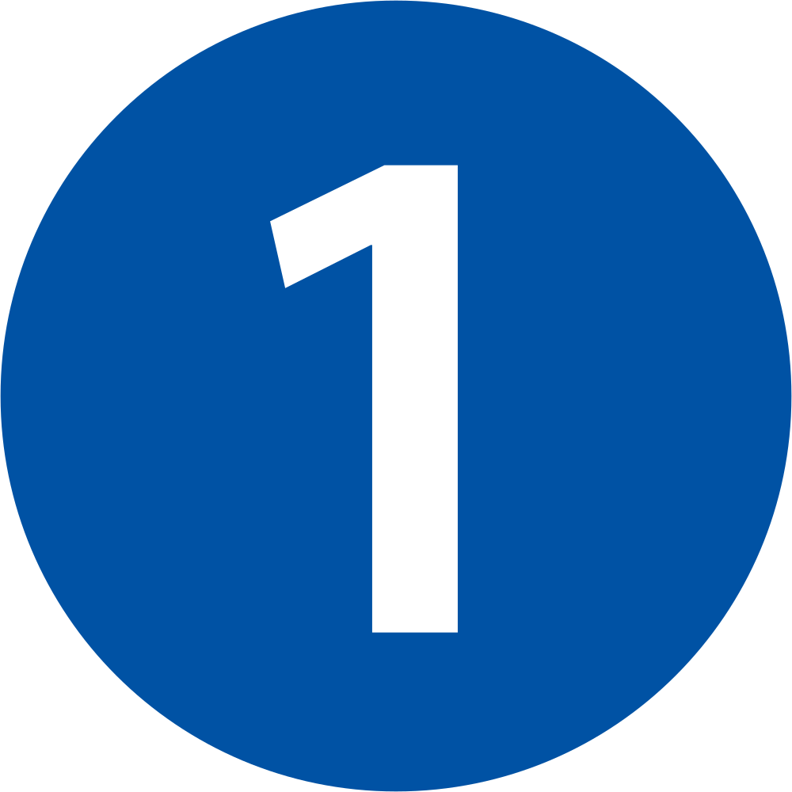
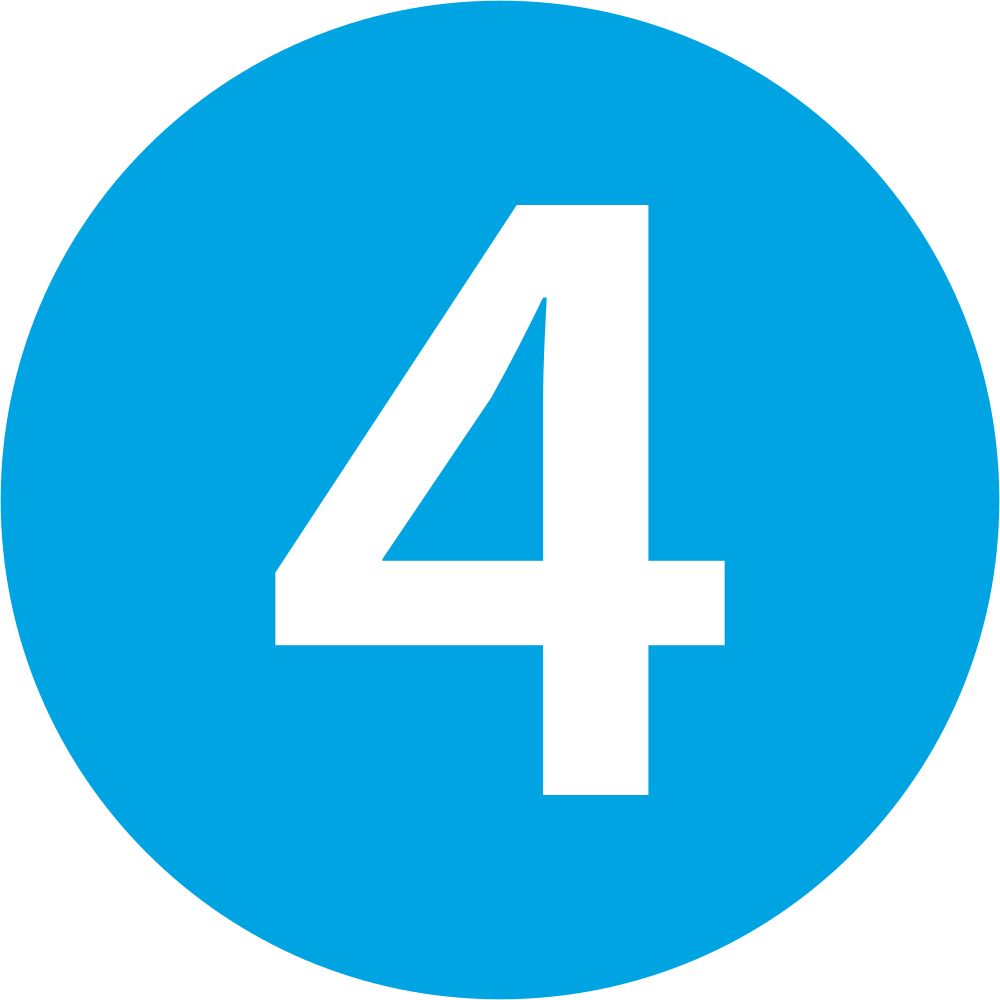
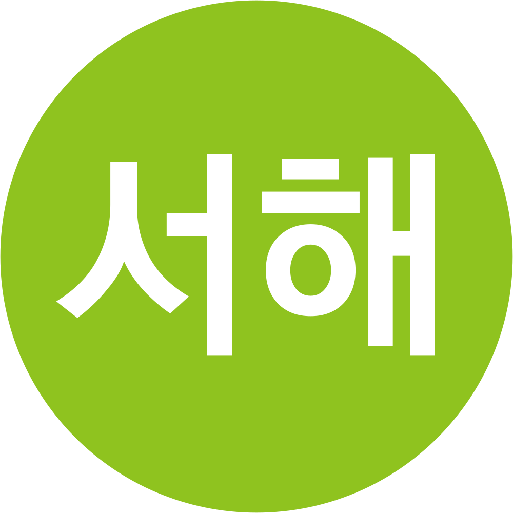
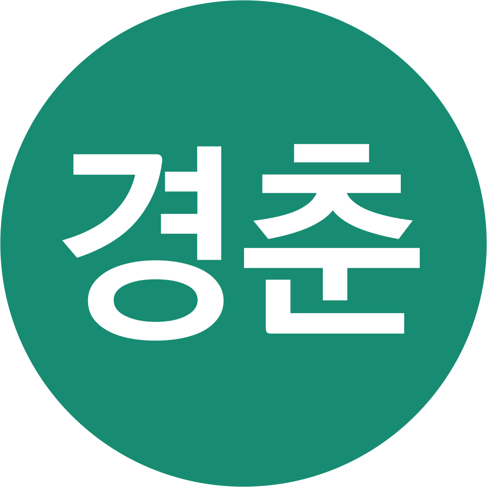

틀 포함: 틀:접근 제한
틀 포함: 틀:대한민국의 철도 운영기관
틀 포함: 틀:국토교통부 산하기관
한국철도공사 韓國鐵道公社 | Korea Railroad Corporation | ||
 | ||
| 설립일 | 2005년 1월 1일 ([age(2005-01-01)]주년) | |
| 전신 | 의정부 공무아문 철도국 (교통부) (1894년 6월 28일~1910년 8월 29일) 조선총독부 철도국 | |
대한민국 교통부 철도국
(1948년 8월 15일~1963년 8월 31일)
대한민국 철도청 운영(광역/일반철도) 부문
(1963년 9월 1일~2004년 12월 31일) ||
| 한국고속철도건설공단 운영(고속철도) 부문 (1992년 3월 9일~2003년 12월 31일) | ||
| 업종명 | 철도 운송업 | |
| 대표자 | 김태승 | |
| 주무 기관 | 국토교통부 | |
| 기업 유형 | 준시장형 공기업 | |
| 상장 여부 | 비상장 기업 | |
| 주요 주주 | 대한민국 정부: 100% | |
| 자본금 | 10조 9,196억 3,764만 627원^^(2023년 기준)^^ | |
| 매출액 | 연결: 6조 3,729억 8,468만 688원^^(2023년 기준)^^ 별도: 5조 8,159억 3,464만 1,251원^^(2023년 기준)^^ | |
| 영업 이익 | 연결: -4,415억 3,613만 8,436원^^(2023년 기준)^^ 별도: -4,743억 1,536만 416원^^(2023년 기준)^^ | |
| 순이익 | 연결: -4,515억 6,025만 9,068원^^(2023년 기준)^^ 별도: -5,424억 7,793만 2,620원^^(2023년 기준)^^ | |
| 자산 총액 | 연결: 29조 664억 628만 7,814원^^(2023년 기준)^^ 별도: 28조 7,523억 5,599만 5,167원^^(2023년 기준)^^ | |
| 부채 총액 | 연결: 20조 4,653억 8,182만 8,623원^^(2023년 기준)^^ 별도: 20조 3,585억 4,547만 6,118원^^(2023년 기준)^^ | |
| 부채 비율 | 연결: 237.94%^^(2023년 기준)^^ 별도: 242.54%^^(2023년 기준)^^ | |
| 직원 수 | 32,982명^^(2026년 2분기 기준)^^ | |
| 자회사 | 코레일관광개발[3] 코레일네트웍스 코레일유통 코레일로지스[4] 코레일테크 | |
| 운영 구간 | ||
| 영업 거리 | 4,147.7㎞^^(2024년 1월 1일 기준)^^ | |
| 미션 | 사람·세상·미래를 잇는 대한민국 철도 | |
| 비전 | 새로 여는 미래교통 함께 하는 한국철도[33] | |
| 슬로건 | 코레일_잇다, 당신이 원하는 모든 길.[34] | |
| 사보 | 레일로 이어지는 행복+ | |
| 주소 | 본사 - 대전광역시 동구 중앙로 240 (소제동, 철도기관 공동사옥) | |
[ 펼치기 · 접기 ]
서울본부-서울특별시 중구 한강대로 405 (봉래동2가)[37] 수도권서부본부-서울특별시 영등포구 도영로 115 (영등포동)[38] 수도권동부본부-서울특별시 동대문구 한천로 472 (이문동)[39] 강원본부-강원특별자치도 동해시 동해역길 69 (송정동)[40] 충북본부-충청북도 제천시 청풍호로 51-13 (영천동)[41] 대전충남본부-대전광역시 동구 중앙로 215 (정동)[42] 전북본부-전북특별자치도 익산시 익산대로 153 (창인동2가)[43] 전남본부-전남광주통합특별시 순천시 팔마로 119 (조곡동)[44] 광주본부-전남광주통합특별시 북구 무등로 235 (중흥동)[45] 경북본부-경상북도 영주시 시청로2번길 30 (휴천동)[46] 대구본부-대구광역시 동구 동대구로 550 (신암동)[47] 부산경남본부-부산광역시 동구 중앙대로 206 (초량동)[48] | ||
| 상징색 |
코레일 블루 (#005BAC)
| |
| 홈페이지 | | 코레일 공식 홈페이지 승차권 예매 홈페이지 코레일+ (안드로이드) 코레일+ (iOS) 코레일+ (원스토어) 철도물류정보서비스 |
| 노동조합 | 전국철도노동조합 한국철도공사노동조합 | |
| 공식 SNS | ||
 | |  | > 틀 포함: 틀:X(SNS) 로고 | | > 틀 포함: 틀:X(SNS) 로고 |  [49] | [49] |  | |  | ||
| 전화번호 | ||
| 철도 고객 센터: 1544-7788, 1588-7788 철도고객센터(영어): 1599-7777 철도고객센터(광역철도 부문): 1544-7769[50][51], #1110-1110[52] 철도구역 내 범죄신고: 1588-7722 승차권 전화반환 콜센터: 1544-8787 | ||
| 코레일-SR 통합 |
| D[dday(2026-09-01)] |
1. 개요
철도 여객운송 및 화물운송 사업을 수행하는 국토교통부 산하 준시장형 공기업. 대한민국의 철도운송사업은 본래 국가사업으로 건설교통부(현 국토교통부) 소관 외청인 철도청이 국유철도에 관한 모든 일을 담당했으나, 철도산업발전기본법 제정에 따른 철도 상하분리 원칙 및 국가 철도운영 금지 원칙을 준수하기 위해 "국유철도 운영에 관한 특례법" 폐지와 한국철도공사법 시행과 함께 철도청의 운영자산·부채를 "국유재산의 현물출자에 관한 법률"(현 국유재산법)에 의거하여 현물출자받아 2005년 1월 1일 설립되었다.[53]
본사는 대전광역시 동구 대전역 동부 호국광장 앞 철도기관 공동사옥에 있다. 설립 초기에는 철도청 본청의 위치를 그대로 이어받아 정부대전청사에 있었으나, 정부기관이 아니므로 정부청사 입주 근거가 사라져 2009년에 이전했다.
2. 관련 영상
| 한국철도공사의 경관, 홍보 영상, 로고송 |

3. 명칭
한국철도공사가 공식적인 법인명이지만, 풀네임으로 부르는 경우는 그리 많지 않고 철도공사 내지는 브랜드명인 코레일이라고 불리는 것이 대부분이다. 공사에서는 자사의 약칭을 '코레일'로 사용해오다가 2019년 10월 8일부로 공식 약칭을 한국철도(KORAIL)로 바꾸었다.[57] 과거 철도청 역삼각 로고 시절에 쓰던 약칭이 부활한 셈이다. 다만 법인명을 바꾼 것은 아니고 한국전력공사를 한국전력으로 줄여 쓰는 데서 착안한 듯하다. 이후 공사에서는 한국철도라는 약칭을 강력하게 밀고 있지만, 언어의 경제성과 익숙함 등의 이유로 현업 직원을 포함해서 코레일이라고 불리는 빈도가 압도적으로 높다. 무엇보다 '한국철도'라고만 하면 '한국의 철도'를 의미하는 것인지, '한국철도공사'를 의미하는 것인지 헷갈리기 때문이다.[58] 결국 2023년 9~10월을 전후하여 보도자료와 안내방송에서 코레일 약칭이 슬그머니 부활하면서 한국철도라는 표현이 대폭 줄어들었으며, 2024년 12월 공식 유튜브 채널인 한국철도TV가 코레일TV로 바뀌며 사실상 주 약칭은 다시 '코레일'이 된 상황이다. 반응이 좋지 않았던 것을 감안한 모양이다.한편, 공사화 후에도 철도청이란 말이 익숙하거나 공사화 사실을 잘 모르는 사람, 특히 노인들은 그냥 철도청이라고도 한다. 그래서 코레일 직원들도 노인 고객을 대할 때 원활한 소통을 위해 철도청이라는 표현을 쓰는 경우가 잦으며, 철도청 공무원 출신의 고참 직원들도 사적인 자리에서는 철도청, 철도공무원 등의 표현을 사용하는 경우가 있다.[59] 하지만 엄밀히 따지면 국가철도공단도 역사를 공유하는 철도청의 후신이기 때문에 한국철도공사만 철도청으로 부르는 것은 옳지 않다.
4. 운영 현황
운영하는 노선과 관리하는 역에 대해서는 각각 철도 노선 정보/대한민국, 역 관련 정보를 참조할 것. 국내에 여객 사유철도가 없는[60] 관계로, 두 항목에 기재되어있는 대부분의 노선 및 역을 철도공사에서 관리한다.틀 포함: 틀:한국철도공사의 여객열차 등급
틀 포함: 틀:한국철도공사의 관광열차2000년 비둘기호를 시작으로 2004년 KTX 개통을 전후해 통일호 등 완행열차는 폐지되었으며, 유일하게 남아있던 완행열차 격 보통열차인 통근열차는 광주선에서 2023년 운행 종료되었다. 2007년까지만 해도 통근열차가 전국적으로 운행되었지만, 운임 대비 적자로 인해 수도권의 경의선, 경원선 열차를 제외하고는 전부 무궁화호로 승격되었다. 또한 일반전동열차는 수도권과 강원도 서부 일부, 충청도 동북부 일부 와 부울경, 대경권지역에서만 운행되고 있다.
국내 대부분의 간선 철도가 일제강점기에 부설된 것으로 인해, 그리고 그 규격에 맞추어 제정된 법에 의해 운영 중인 노선이 일산선과 진접선을 제외하면 전부 좌측통행이다.[61] 또한 전철화된 구간 대부분 교류 25kV(25,000V)을 채용하고 있다. 헌데 이 규격을 지나치게 성실히 준수해서, 하다못해 지하에서마저 교류 전철화를 해서[62] 세계에 유례없이 많은 교류 지하철을 양산했다. 또한 세계 어느 나라의 철도에서도 볼 수 없는 철도 역사상 전무후무한 서울 지하철 4호선과 과천선 사이에 만들어진 꽈배기굴이란 것도 존재한다.[63] 게다가 서울 지하철 3호선에 연계되는 일산선까지 교류+좌측통행으로 하여 꽈배기굴을 만들려다 감사원이 예산낭비라고 태클을 걸었다. 결국 일산선은 어쩔 수 없이 직류/우측통행으로 통일해 직결하기로 결정하면서 이런 병크가 일어나지 않게 되었다.[64]
열차번호체계에서 KTX는 000~200, 400, 500, 700, 800번대를[65], 새마을, 무궁화 등 일반열차는 1000번대를[66], ITX-청춘이 2000번대를, 화물열차는 3000번대(정기)와 5000(임시), 6000~7000(부정기, 근거리, 현시각 등)번대를, 임시여객열차는 4000번대를 쓰고 있다.
- 정거장 등급 분류
틀 포함: 틀:한국철도공사의 정거장 등급
5. 보유 차량 목록
틀 포함: 틀:한국철도공사의 전동차
틀 포함: 틀:한국철도공사의 기관차
틀 포함: 틀:한국철도공사의 디젤동차
- 기아 뉴 그랜버드 이노베이션 실크로드 디젤 (6770번 KTX 공항리무진 운행용)
현대 유니버스 프라임 수소전기버스(6770번 KTX 공항리무진, 2026년 말 도입 예정)[67]
5.1. 차량 역사(歷史)
이 분류는 공식적인 기준은 아니나, 철도청 시절부터 자료 등에서 많이 보이는 차량 위주로 서술한 것.틀 포함: 틀:한국철도공사의 연도별 여객열차 목록
- 1960년대 후반 ~ 1983년 12월 31일: 관광호, 우등 열차, 통일호, 비둘기호
- 1972년: 대한민국 정부수립 후 최초의 전기기관차인 8000호대 전기기관차 운행 시작.
- 1984년 1월 1일 ~ 2000년 11월: 새마을호, 무궁화호, 통일호, 비둘기호
- 1993년에 한국 최초의 VVVF 방식 전동차인 341000호대 전동차(구. 2030호대)가 등장.
- 2000년 11월~2004년 3월 31일: 새마을호, 무궁화호, 통일호
- 2004년 4월 1일: 대한민국 최초의 고속철도인 KTX가 개통하여 전국을 일일 생활권으로 만들어 주었다.
- 2005년: 수도권 전철 1호선과 수도권 전철 경의·중앙선에 들어가는 차량인 3세대 VVVF 통근형 전동차[68]가 새롭게 운행하기 시작했다.[69]
- 2006년: 일반열차에서는 디젤 기관차 대신 8100, 8200호대 전기기관차가 주력이 된다. 수도권 전철 1호선과 수도권 전철 경의·중앙선에 들어가는 차량인 3세대 VVVF 통근형 전동차[70]가 새롭게 운행하기 시작했다.[71]
- 2009년: 최초의 VVVF 간선형 전기동차 누리로가 운행을 시작하였다.[72]
- 2010년: 기존 KTX-I 차량의 단점을 보완하고 순수 국산 기술로 제작한 차량인 KTX-산천이 새롭게 등장하였다.
- 2012년: 객차형 새마을호와 함께 등장한 7000호대 디젤기관차가 장항선 계통 무궁화호 견인을 끝으로 퇴역한다. 2010년 12월 경춘선이 복선화 개량된 뒤 새로운 특급열차인 ITX-청춘[73]이 운행을 시작하였다. 또한 8000호대 전기기관차의 퇴역을 앞두고 8500호대 전기기관차가 등장했다.
- 2013년: 약 26년 동안 새마을호를 운행했던 DHC 디젤동차가 운행을 종료하고 그 임무를 특대형 디젤 기관차와 8100, 8200호대 전기기관차에 넘기고 퇴역하였다.
- 2014년: 최초의 양방향 운전실 디젤기관차인 7600호대 디젤기관차가 도입되었다. 또한 기존 새마을호의 후신인 ITX-새마을[74]이 운행하기 시작하였다.
- 2018년: 마지막까지 남아 장항선을 달리던 객차형 새마을호가 객차의 내구연한 만료로 인해 2018년 4월 30일 부로 운행을 종료하였고 역사 속으로 사라지게 되었다. 현재는 에코레일관광열차를 제외하고 전부 운행을 멈춘 상태이다. 이에 한국철도공사는 비전철화 구간인 장항선의 새마을호 운영을 지속할 수 있도록 무궁화호 리미트 객차를 개조하고 도색을 푸른색의 기존 새마을호 도색이 아닌 ITX-새마을의 도장으로 새로 도색하여 운행을 재개하였다.
- 2020년: O-Train으로 운행해던 TEC 전동차 8호기가 폐지 후 동해산타열차로 개수되어 운행을 시작했다.
- 2021년: 최초의 동력분산식 고속열차이자 최초의 준고속선 스펙의 KTX-이음이 운행을 시작하였다.
- 2023년: 9월 1일 무궁화호를 대체하는 새마을호 등급의 ITX-마음(4량)[75]이 운행을 시작하였다. 동년 12월 18일, CDC 통근열차와 RDC 무궁화호가 운행을 종료하였다. 이로써 한국철도공사에서 여객으로 운행하는 디젤동차는 완전히 역사 속으로 사라지게 되었다.
- 2024년: 4월 30일을 끝으로 무궁화호 유선형 특실 객차(격하특실)의 운행이 종료되었다. 5월 1일 KTX-이음의 개선형이자 고속선 개량 모델인 KTX-청룡이 운행을 시작하였다.
- 2025년: 12월 10일을 끝으로 최후의 디젤동차 경복호(특별동차)가 퇴역하였다. 현대로템과 협업하여, KTX 역사상 최초로 우즈베키스탄에 수출하게 된다.[76]
- 2026년: 3대 산업선[77]에서 활약해온 8000호대 최후(후미) 4량과 유로스프린터 선두 기관차 2량[78]이 퇴역하였다.[79] 또한 퇴역하는 7300~7500호대 특대형 디젤기관차를 대체하기 위한 7700호대 디젤기관차가 도입될 예정이다. 9월 1월부터는 주식회사 SR과 통합됨과 동시에, 임대 차량[80]은 물론이고 주식회사 SR의 130000호대와 180000호대 고속차량 전 편성이 이관된다.
6. 역대 사장
틀 포함: 틀:역대 한국철도공사 사장
| 대수 | 성명 | 임기 | 대표약력 [81] |
| 제1대 | 신광순 | 2005년 | 제24대 철도청장 |
| 제2대 | 이철 | 2005년 ~ 2008년 | 제12 ~ 14대 국회의원, 통합민주당 원내총무 |
| 대행 | 박광석 | 2008년 | 한국철도공사 인사노무실장, 부사장 |
| 제3대 | 강경호 | 2008년 | 서울메트로 사장 |
| 대행 | 심혁윤 | 2008년 ~ 2009년 | 부산지방항공청장, 한국철도공사 부사장 |
| 제4대 | 허준영[82] | 2009년 ~ 2011년 | 제12대 경찰청장 |
| 대행 | 팽정광 | 2011년 ~ 2012년 | 철도청 서울지역본부장, 교통안전공단 검사운영본부장, 한국철도공사 부사장 |
| 제5대 | 정창영 | 2012년 ~ 2013년 | 감사원 사무총장 |
| 대행 | 팽정광 | 2013년 | 철도청 서울지역본부장, 교통안전공단 검사운영본부장, 한국철도공사 부사장 |
| 제6대 | 최연혜 | 2013년 ~ 2016년 | 철도청 차장, 한국철도공사 부사장, 한국철도대학 총장 |
| 대행 | 김영래 | 2016년 | 철도청 기술개발본부장, 한국철도차량엔지니어링 이사장, 한국철도공사 부사장 |
| 제7대 | 홍순만 | 2016년 ~ 2017년 | 한국철도기술연구원 원장, 인천광역시 경제부시장 |
| 대행 | 유재영 | 2017년 ~ 2018년 | 한국철도공사 광역철도본부장, 한국철도공사 부사장 |
| 제8대 | 오영식 | 2018년 | 제16 ~ 17, 19대 국회의원 |
| 대행 | 정인수 | 2018년 ~ 2019년 | 한국철도공사 기술본부장, 한국철도공사 부사장 |
| 제9대 | 손병석 | 2019년 ~ 2021년 | 국토교통부 철도국장, 국토교통부 제1차관 |
| 대행 | 정왕국 | 2021년 | 한국철도공사 경영혁신단장, 한국철도공사 부사장 |
| 제10대 | 나희승 | 2021년 ~ 2023년 | 한국철도기술연구원 원장, 민주평화통일자문회의 경제협력분과위원회 상임위원 |
| 대행 | 고준영 | 2023년 | 한국철도공사 기술본부장, 한국철도공사 부사장 |
| 제11대 | 한문희 | 2023년 ~ 2025년 | 한국철도공사 경영지원본부장, 부산교통공사 사장 |
| 대행 | 정정래 | 2025년 ~ 2026년 | 한국철도공사 경영기획본부장, 한국철도공사 부사장[83] |
| 대행 | 홍승표 | 2026년 | 한국철도공사 안전기술총괄본부장 |
| 제12대 | 김태승 | 2026년 ~ (현재) | 인하대학교 경영대학 아태물류학부 교수 |
- 한국철도공사 정관 제10조에 의거하여 한국철도공사 사장의 임기는 3년이고, 1년 단위로 연임될 수 있다. 또한 임기를 다 채웠음에도 불구하고 후임자가 임명되지 않았다면 사장 직무를 계속해서 수행하여야 한다. 그러나, 역대 사장 중에서 3년 임기를 채운 인물은 아무도 없었다. 대부분 절반 남짓 밖에 임기를 채우지 못하고 해임되거나 사퇴하는 등의 이유로 사장 직무대행자에게 이양하였다.
7. 코레일 멤버십
철도청 시절인 1989년부터 철도회원 제도가 있었고, 현재는 코레일멤버십이라는 이름으로 운영 중이다.철도회원제도는 예치금을 받는 유료회원 제도였고 회원카드를 제공했으며 전화 및 PC통신을 통한 열차표 예매, 회원 전용 창구, 회원전용 티켓 발매기 등의 예약편의와 이용실적에 따른 무임승차권 등의 혜택을 제공했다.
2004년 KTX패밀리 제도가 신설되었고 2007년 코레일 멤버십 회원제도가 신설되는 등 여러 철도회원제도가 운영되다가 2011년 글로리 코레일 멤버십 이라는 명칭으로 통합되었다. 무료 회원등급인 골드등급과, 이용실적에 따라 올라가는 유료 회원등급인 루비, 사파이어, 에메랄드, 다이아몬드 등급으로 운영되었으나 2013년 7월부터 회원카드와 마일리지적립제도가 폐지되고 할인쿠폰제도가 신설되었다. 2016년 11월 KTX마일리지제도가 신설되어 KTX 이용금액의 5~10%를 마일리지로 적립 가능해졌다. 2017년 4월부터는 회원등급이 패밀리, 비즈니스, VIP, VVIP로 변경되었다.
7.1. 마일리지 제도
한국철도공사 홈페이지 마일리지 이용안내2016년 11월 11일부터 KTX 마일리지를 도입하였다. 코레일 멤버십 회원이 KTX 열차 이용 시 다음 날에 적립된다. 적립 비율은 과거 마일리지 제도와 같은 5%이며, 평균 승차율 50% 미만 배차는 10%[84]가 적립된다. 자사의 선불교통카드인 레일플러스로 승차권을 계산할 경우에는 1% 추가 적립된다.(창구에서만 사용할 수 있으며 명절 대수송기간의 승차권은 결제 불가하다. 대신 코레일+에서 모바일 레일플러스로 결제할 때 적용 가능) 한편, 더블적립은 홈페이지나 코레일+에서 구매 후 홈티켓, 스마트티켓 발권 시에만 적용된다. 현장 구매는 기본 적립율 5%가 적용되며, 출발 전에 코레일 멤버십 회원임을 증명해야 하며 이미 출발한 열차는 적립이 되지 않으니 주의할 것.
한 번의 결제로 승차권을 2장 이상 구입한 경우 구매자는 승차권 1장의 실결제 금액만큼 자동 적립되는데, 나머지 금액을 적립 받으려면 열차 탑승 승객이 레츠코레일이나 코레일톡 앱을 통해 KTX 동행자 마일리지 적립 신청 후 적립받아야 한다. 구매자가 모두 적립 혜택을 받으려면 승차권을 1장씩 구매해야 한다.
마일리지 이용을 위한 코레일 멤버십 가입은 코레일+이나 코레일 홈페이지에서 가입할 수 있다. 단, 14세 미만은 레츠코레일 홈페이지에서만 가능하다. 그러나 레츠코레일에 가입했다면 14세 미만도 코레일톡에서 로그인이 가능하다.
인터넷 특가의 경우 5~20%을 10~30%로, 힘내라 청춘의 경우 10~30%를 10~40%로 확대한다. 할인승차권의 경우 자유석, 입석, 환승, 노인, 장애인, 어린이, 국가유공자 대상 할인 승차권만 KTX 마일리지 적립 대상이며, 청소년드림, 힘내라청춘, 인터넷 특가, 맘편한 KTX, 다자녀 승차권, 쿠폰 적용 승차권, 승차권과 연계되는 여행상품, 철도공사와의 운송계약을 통해 할인받은 승차권 또는 후급으로 지급하는 승차권 등은 적립 대상에서 제외된다. 또한 2026년 2월 25일부터 운행되는 수서역 시종착 KTX도 SRT 운임에 준하는 운임을 적용받아 마일리지 적립 대상에서 제외된다. #
그 외, OK캐쉬백, 우리모아포인트, KTX 마일리지 등 포인트로 결제한 금액은 적립대상에서 제외된다. 일반열차는 기존 누적 이용금액 30만 원 결제 시 10%, 100만 원 결제 시 30% 할인쿠폰을 지급하던 것을 앞으로는 누적 금액 10만 원 결제 시 10%, 반기별로 30만 원 결제 시 30%로 쿠폰혜택을 높인다.
과거 2007년 멤버십 제도 개편 전에는 보증금/평생회비 2만원을 내고 할인 및 마일리지 적립 혜택이 있었다. 그러다가 2007년 멤버십 제도를 개편하면서 회비가 없어지고 마일리지 혜택도 덩달아 축소되더니, 2013년에 마일리지가 폐지되어 많은 비판을 받았다.
2016년 11월 11일 자로 KTX 마일리지라는 이름으로 마일리지 제도가 부활하였다.
2019년 11월 7일자로 'KTX 마일리지 동행자 구분 제도'로 마일리지 정책을 변경하였는데, 승차권을 2장 이상 구매한 경우 구매자에게 모든 마일리지가 적립되는 것이 아닌 구매자에게 1장 분량의 마일리지가 자동 적립되고, 동행자는 별도의 신청을 통해 마일리지를 적립받을 수 있도록 변경되었다. 보도자료 그러나 코레일멤버십에 가입하기 어려운 유아, 어린이, 중증장애인이 마일리지 적립이 사실상 불가능한 문제가 있어 2024년 10월 8일부터 유아, 어린이, 중증장애인으로 승차권을 구매한 경우 구매자에게 자동 적립되도록 변경했다.
적립된 마일리지로 승차권을 구매하거나 환불 수수료를 대체할 수 있다.
8. 라운지
| [youtube(uwojUA2baAk, width=640, height=360)] |
용산역, 동대구역, 부산역에서 운영하는 휴게 공간이다.[85] 예전에는 공항라운지처럼 별도의 공간에서 식수, PC, WiFi, TV뉴스, 열차정보, 신문/매거진, 콘센트/USB포트를 무료 제공했으며, 유료서비스로 커피와 복합기도 이용 가능했다. 이때는 당일 승차권을 가진 승객과 코레일 멤버십 가입자만 이용가능한 장소였다.
그러나 어느 순간부터 이와 같은 라운지는 사라지고 스토리웨이 직영 카페 체인점인 트립핀과 같이 입점해 있는 형태로 바뀌었다. 사실상 열차정보만 제공하는 카페로 바뀐 격이라 이용에 제한이 없어졌다. 그래서 누구나 이용할 수 있게 되었지만 반대로 라운지 특유의 특별함은 사라졌다.
SRT 승차권을 제외한 당일 열차 승차권 소지 고객은 카페에서 제조하는 음료가 10% 할인된다.
9. 예매
1980년대 중순부터 구축된 철도 전산망을 통해 다양한 방법으로 표를 예매할 수 있다. 철도청 시절에는 전국 조흥은행에서도 철도 승차권을 발권했으나 철도청이 한국철도공사로 법인화하면서 중단했다. 이 승차권 발권 역할이 우체국으로 옮겨졌지만 이것도 2011년 7월 31일을 마지막으로 발권이 중단되어 철도역 이외에는 지정된 여행사에서만 구입할 수 있다.현재는 창구와 자동발매기 외에 철도고객센터(1544-7788, 1588-7788), 코레일 웹사이트(https://korail.com), 스마트폰 코레일+ 앱에서 예매가 가능하다. 예매는 코레일+를 제외하고 모두 출발 20분 전까지의 열차를 예매할 수 있고, 코레일+는 출발 전까지 예매할 수 있다.
자동발매기에서는 특실, 일반실, 자유석(입석 포함)을 구분해서 발권할 수 있으나 할인쿠폰을 적용할 수 없고(코레일멤버십 마일리지 적용/적립은 가능), 특정 좌석도 선택할 수 없다.(KTX의 역방향 좌석은 선택 가능)이에 한국철도공사의 답변은 "현장에서 빨리 티켓을 구입할 수 있게 하기 위해 이들을 뺀 것"이라고 한다. 자동발매기에서 좌석 배정을 하려면, 약간의 꼼수가 필요하다. 코레일+ 앱에서 출발 20분 전까지 좌석을 지정하고 예약을 한 후 결제를 하지 않은 상태에서 10분 이내에 자동발매기의 '예약표 찾기' 메뉴로 들어가서 결제하고 발권하면 된다.
이외에도 해외 발행 카드들 중 아메리칸 익스프레스, 다이너스 클럽 등 카드번호가 16자리가 아닌 것도 사용할 수 없다. 해외 발행 비자카드, 마스터카드는 한국어 사이트에서는 발권이 불가능하나 영어 등 외국어 사이트에서 사용 가능하다.
창구와 평창 올림픽 당시부터 도입된 태블릿형 자동발권기에서는 선불교통카드로도 승차권 구입이 가능하다. 그러나 명절 시즌의 특별운송기간에는 창구에서 교통카드로 승차권을 구입할 수 없다. 이는 모든 선불교통카드에 공통으로 적용되는 사항이다.
한국철도공사는 고속버스조합과 마찬가지로 신용카드 가승인 방식을 사용한다. 예매 시 가승인 후 실제 승차 또는 예매 후 미발권 발생일에 승인을 내는 방식이다. 예매 시부터 실제 승차 시까지 취소 등의 이유로 변동 사항이 발생하는 경우가 많아 가승인 방식을 사용하고 있다. 그래서 선불카드는 사용할 수 없다. 카드 취소 시에도 일반적인 방식과 매출취소 프로세스가 다르며 취소를 확인하는 데 시간이 소요된다.
일반열차 시간표나 ARS/전산 예매에 쓰이는 3자리 숫자로 된 역코드는 순서가 비직관적인데, 1980년대 후반에서 1990년대 초반의 역 중요도를 기준으로 한 것이기 때문에 그렇다. 상행부터 하행까지 순서대로 넣은 것이 아니라 당시 새마을호 정차역과 주요 운전취급역 위주로 넣었기 때문에 같은 노선 안에서 여기저기 뛰어넘어 다니는 것. 서울역(001)부터 부산역(020)까지, 그 다음으로는 경부선에 직접 운행계통이 물려있는 역들[86], 경전선, 중앙선, 충북선, 장항선, 호남선, 전라선, 기타등등 순서대로 번호를 부여한 것이다. 그리고 남는 뒷번호들은 화물역, 간이역, 임시승강장, 신호장 등에 때려넣었다. 간혹 시간표상에 093, 096은 있는데 094, 095처럼 중간에 번호가 뻥 빈 곳은 폐역되거나 시간표 개정으로 더 이상 여객열차가 정차하지 않게 되는 바람에 역 이름이 시간표에서 빠져버린 경우다. 한편 이렇게 빠진 것 중에는 아예 엉뚱한 구간에 가있는 경우도 있는데, 이를테면 기구한 운명을 가진 역코드 038은 원래 호남선 영산포역의 것이었으나 호남선 개량으로 폐역, 현재는 영동선 망상역에 등록되어 있다. 나한정역에 영동선 여객열차가 특별정차하던 시절에는, 아예 망상역에 걸려있는 038 단말기를 나한정역에 갖다놓고 표를 뽑아주기도 했다.
9.1. 할인 상품
KTX의 경우 365할인[87] 등의 할인이 가능하다. 첫/막차 시간대나 서대전 경유 등 표가 많이 남는 구간에서 할인율이 높다.장애인, 국가유공자들을 위한 복지 혜택이 있다. 전철은 무임으로 승차가 가능하고, 장애의 정도가 심한 장애인[88]은 장애인 본인 및 보호자 1인까지 KTX를 포함한 모든 열차 운임이 50% 할인되며, 장애의 정도가 심하지 않은 장애인[89]은 KTX와 새마을호는 주중(토,일,공휴일 제외) 운임이 30% 할인되고, 무궁화호 이하 열차는 요일에 상관 없이 운임의 50%가 할인된다. 시각장애인이 인도견과 함께 여행하는 경우 인도견은 무임(좌석 지정 포함)으로 운송한다. 그리고 국가유공자(독립유공자, 상이등급 1 ~ 2급 유공자는 보호자 포함)는 KTX 이하 모든 열차에 대해 1년에 6번까지 무임승차가 가능하며 무임횟수를 초과하는 경우에는 운임의 50%를 할인해 준다.
만 65세 이상 경로는 운임의 30% 할인되며 KTX, ITX-마음, ITX-새마을, 새마을호는 주중(월~금)에만 할인이 적용된다. 무궁화호와 누리로는 주중 주말 상관없이 할인이 적용된다.
2015년부터 요금과 할인 제도가 한 번 더 바뀌었는데, 월~목 요금이 금/토/일 요금으로 통일되어 실질적으로는 요금이 인상됐다. 주중 요금 할인과 KTX 역방향 할인 등을 폐지하는 내용의 요금 제도 개편안을 2014년 7월에 내놨다가 사실상의 '요금 인상'이라는 논란이 일자 시행을 유보한 바 있었는데, 이게 2015년부터 시행되는 것. KTX는 출입문 쪽 좌석과 역방향 좌석의 5% 할인이 폐지되고, 대신 출발 이틀 전까지 일부 시간대의 열차에 대해 인터넷이나 코레일톡 앱으로 예매하면 5%~15% 할인해 주는 인터넷 특가가 있다. 요일에 관계 없이 시간대별 승차율에 따라 열차의 할인율이 다르니 반드시 확인해야 한다.
"KTX 청소년 드림"은 가격 부담으로 버스나 일반열차를 이용하는 청소년을 위한 할인 상품이다. 만 24세 이하 청소년 회원이 출발 1일 전까지 인터넷, 코레일톡 앱에서 구입이 가능하고 열차별 승차율에 따라 선착순으로 최대 30%까지 할인된다.
청소년 드림의 상위호환으로 할인해 주는 것이 N카드다.[90] 연령 제한 없이 쓸 수 있으며, 2개월 (연장하면 3개월) 기준으로 5번 타면 청소년 드림과 비교해서도 본전을 뽑는다. 게다가 청소년 드림은 출발 하루 전까지 써야 하지만 N카드는 당장 타고 갈 열차에도 15% 할인을 적용해 준다. 2020년 기준으로 서울에서 점심시간에 출발하는 열차는 40% 할인이 많이 보인다. 즉 왕복 한 번이면 본전. 같은 구간을 한달에 한 번 이상 왕복하는 사람이라면 꼭 사자. 주의사항은 N카드만 구매하고 열차에 승차하면 부정승차로 적발되어 부가금이 부과되니 N카드와 승차권을 같이 구매하도록 하자.
KTX 특실 할인 상품은 특실 여유 좌석 활용 및 특실 체험 기회를 확대하기 위한 것으로, 예상 잔여석 중 특실 요금의 50%까지 할인된다. "파격가 할인"을 특실로 연장한 것인데, 특실 요금 자체에서 할인하는 것이 아니라 일반실 요금의 할인액만큼 특실 요금을 할인한다.[91]
2015년 10월부터(11월 1일 승차분) KTX 승객 5억 명 돌파를 기념으로 "KTX 힘내라 청춘"과 "Mom편한 KTX" 할인 상품이 출시되었다. 힘내라 청춘의 경우 인증 절차를 거친 만 25세부터 만 33세의 코레일 멤버십 회원을 대상으로 인터넷이나 코레일톡 앱으로 예매 시 열차별 승차율에 따라 일반석을 최대 40%까지 할인해 준다. 맘 편한 KTX는 역 창구에 임신확인서(또는 진단서)와 신분증을 지참하고 방문 또는해 상품 구입을 위한 등록 절차를 거친 임산부 회원에게 KTX 특실을 일반실 운임으로 탈 수 있게 해 주는 것이다. 또는 정부24 홈페이지에서 맘편한 임산부 등록하는 것도 가능하다.[92] 역시 인터넷 또는 코레일톡 앱에서 예매해야 한다. 사실상 전술한 10% 할인쿠폰과 더불어 특실 요금에 직접 할인을 걸 수 있는 수단 중 하나다.
2024년 10월 5일 승차분부터 맘편한 KTX는 맘편한 코레일로 상품명이 변경되어 임산부 KTX 특실/우등실 요금 면제 외에도 KTX, ITX-청춘, ITX-마음, ITX-새마을, 새마을호, 무궁화호의 운임을 40% 할인한다.
기초생활수급자를 위한 기차누리 할인상품이 있다. 할인상품 이용을 위해서는 코레일멤버십에 가입되어 있어야 하고 역 창구 또는 홈페이지(마이페이지-회원정보관리)에서 기초생활수급자 등록 후 상품 구입 인증을 받아야 한다. KTX, 새마을호, 무궁화호 열차별 승차율에 따라 30% 할인을 받을 수 있다. 할인기간은 인증 후 1년이며, 매년 재등록이 필요하다.
청소년 드림, 힘내라 청춘, 맘 편한 코레일, 기차누리 할인상품은 1일 2회, 1개월 8회까지 할인 적용을 받을 수 있다. 명절 특별 수송기간에는 할인상품이 운영되지 않는다. 365할인을 제외한 할인상품의 승차권은 회원 본인만 이용할 수 있으므로 승차권 전달하기 기능을 이용할 수 없다. 또한 할인승차권을 회원 본인이 아닌 자가 이용하는 경우 부정승차로 간주되어 할인금액 회수(부과) 및 부가운임이 수수되며 할인승차권을 타인에게 전달될 시 할인자격이 정지된다.
9.2. 지연·운행중지 배상
○ 열차지연 배상| 20분 이상 40분 미만 | 40분 이상 60분 미만 | 60분 이상 |
| 12.5% | 25% | 50% |
- 공사의 귀책사유로 KTX 및 일반열차가 20분 이상 지연된 경우 소비자분쟁해결기준에 따른 금액을 배상한다.
- 지연 배상 대상이 아닌 경우
- 공사의 귀책사유가 아닌 경우[93]
- 자연재해, 재난 등 천재지변
- 지연승낙한 승차권: 열차가 이미 지연된 상태임을 확인하고 승차권을 발권하는 경우. 이 경우 "지연보상없음" 문구가 승차권 상단에 표기된다.
- 자유여행패스(내일로 두번째 이야기, 문화누리레일패스, 교외하루패스)로 열차를 이용한 경우
- 최초 결제수단으로 지연배상금액 반환
- 신용결제: 지연된 날로부터 익일에 승인 자동취소되어 소비자분쟁해결기준에 따른 금액을 배상
- 현금결제: 지연된 날로부터 1년 이내 승차권을 전국 모든 역에 제출하고 환급, 코레일+와 홈페이지에서 계좌이체 신청 가능
- 정기승차권으로 열차 이용 중 지연된 경우 당일 도착역에서 '정기승차권 지연확인증 발급' 후 이용기간 종료 이후 역 창구에서 정기승차권과 정기승차권 지연확인증을 제시하면 배상을 받을 수 있다.
○ 열차운행중지 배상
- 법령, 정부기관 명령, 전쟁, 소요, 천재지변 등 불가항력적 사유로 열차운행이 중지된 경우 승차하지 않은 구간의 운임·요금을 환불한다.
- 여행시작전(열차를 이용하기 전) 여행을 포기하는 경우 운임·요금을 전액 환불한다.
- 승차하지 않은 구간이 공사가 정한 최저운임·요금 구간인 경우 최저운임·요금을 환불한다.
- 철도사업자의 책임으로 열차운행이 중지된 경우 운임·요금 환불 이외 아래 기준에 따라 배상금을 지급한다.
※ 배상 금액은 역 또는 홈페이지에 게시한 시각을 기준으로 함
- 1시간 이내 출발 열차: 영수금액 환불 + 10% 배상
- 1시간~3시간 이내 출발열차: 영수금액 환불 + 3% 배상
- 3시간 초과 출발열차: 영수금액 환불
- 출발 후 운행중지: 미승차 구간 운임·요금 환불 + 잔여구간 10% 배상
10. 조직
직제규정 시행세칙 (2026.06.17. 개정) 기준- 사장
- 비서실
- 홍보문화실: 언론홍보처, 문화홍보처(디자인센터)
- 상임감사위원
- 감사실: 감사기획처, 종합감사처, 경영감사처, 청렴조사처(반부패청렴센터)
- 경영부사장
- 경영부문
- 기획조정본부: ESG경영처, 전략기획처, 예산처, 성과관리실
- 인재경영본부: 윤리경영처, 인사기획처, 인사운영처, 노사상생처, 복지후생처
- 재무경영실: 재무회계처, 자금물자처, 상생계약처
- 미래부문
- 정보보안실
- 신성장사업본부: 신성장기획처, 자산운영처, 신성장개발처
- AI전략본부: AX기획처, AX추진처, 디지털관리처
- 해외사업본부: 국제협력처, 해외사업1처, 해외사업2처
- 영업부문
- 영업기획실
- 여객사업본부: 여객계획처, 여객마케팅처, 역운영처, 열차여행처
- 광역철도본부: 광역계획처, 광역마케팅처, 광역운영처
- 물류사업본부: 물류계획처, 물류마케팅처, 물류수송처
- 안전부사장
- 안전부문
- 관제실
- 안전본부: 안전계획처, 산업안전처, 시민안전처, 안전분석처, 비상계획처, 철도시설안전합동혁신단
- 수송본부: 수송기획처, 수송운영처, 작업관리처
- 기술부문
- 탄소중립추진단
- 차량본부: 차량계획처, 고속차량처, 일반차량처, 전동차량처
- 시설본부: 시설계획처, 궤도관리처, 구조물안전처
- 전기본부: 전기계획처, 전철전력처, 통신처, 신호제어처
- 건축기술단: 건축시설처, 건축설비처
- 지역본부: 경영인사처, 안전보건처, 영업처, 승무처, 차량처, 시설처, 건축처, 전기처
- 철도박물관(수도권서부본부 경영인사처 철도박물관팀, 홍보문화실 문화홍보처)
10.1. 부속기관
- 사장: 철도연구원
- 경영부문
- 인재경영본부: 인재개발원
- 교육계획처: 휴먼안전센터
- 경영교육센터, 운전교육센터, 차량교육센터, 기술교육센터
- 교육원: 서울교육원, 대전교육원, 부산교육원, 곡성교육원[94], 영주교육원
- 재무경영실
- 회계통합센터: 회계총괄부, 수입회계부, 지출회계부(2), 일반용품부, 차량용품부, 시설전기용품부, 공사용역부, 품질검사부
- 미래부문
- AI전략본부
- IT운영센터: 정보기획부, 여객정보부, 운송정보부, 경영정보부, 시스템운영부
- 안전부문
- 철도교통관제센터
- 수송본부: 특별동차운영단
- 기술부문
- 차량본부
- 철도차량정비단(수도권, 부산, 대전, 호남, 시흥)
- 미래차량센터: 기술기획부, 전기기술부, 기계기술부, 제작기술부
- 시설본부: 고속시설사업단
- 전기본부
- 고속전기사업단
- 서울정보통신사무소: 정보통신사업소, IT중정비사업소
10.2. 지역본부
틀 포함: 틀:한국철도공사 지역본부한국철도공사는 현재 12개의 지역본부를 운영하고 있다.
| 본부 명칭 | 본부 소재역 |
| 서울본부 | 서울역 |
| 수도권서부본부 | 영등포역 |
| 수도권동부본부 | 청량리역, 신이문역 |
| 강원본부 | 동해역 |
| 충북본부 | 제천역 |
| 대전충남본부 | 대전역 |
| 전북본부 | 익산역 |
| 광주본부 | 광주역 |
| 전남본부 | 순천역 |
| 경북본부 | 영주역 |
| 대구본부 | 동대구역 |
| 부산경남본부 | 부산역 |
코로나19 사태 장기화 등으로 인한 수요 감소 등 경영위기 극복을 위해 2020년 9월 21일자로 지역본부를 8개로 축소하는 구조개혁을 단행하였다.[95](기사) 수도권동부, 충북, 광주, 대구본부는 각각 서울, 대전충남, 전남, 경북본부로 통합됐다. 행정구역 및 기능 등을 고려해, 수도권서부본부>수도권광역본부, 대전충남본부>대전충청본부, 전남본부>광주전남본부, 경북본부>대구경북본부로 각각 개칭되고 일부 관할노선도 조정됐다. 관할범위 확대로 인해 안전에 영향이 없도록 대구, 광주, 제천, 수도권동부 등 4개 지역에는 지역관리단을 두어 현장과 밀접한 안전·환경관리, 선로 및 전차선 유지보수 등 안전관련 기능을 유지한다.
2023년 12월 26일부터 각 지역관리단이 다시 지역본부로 승격해 2020년 지역본부 축소 전으로 돌아간다.#1#2#3
10.3. 차량사업소 목록
틀 포함: 틀:한국철도공사의 차량사업소

수도권 전철 1호선- 구로차량사업소[96]
- 병점차량사업소
- 이문차량사업소

수도권 전철 4호선- 시흥철도차량정비단

수도권 전철 서해선- 시흥철도차량정비단[97]

 ·
· 
ITX-청춘, 수도권 전철 경춘선- 평내차량사업소
 ·
· 


11. 노동조합 현황
- 전국철도노동조합(제1노조 / 철도노조,
전철노, 철노): 민주노총 공공운수노조 소속, 교섭대표노조.[98] 조합원은 약 21,000명[99]으로 규모가 가장 크다. 비공식적으로 '전철노'라 불리다가 2018년 규약 개정을 통해 '철도노조'를 유일한 약칭으로 못박았으나, 이후에도 사내에서 공공연히 전철노라 불린다. 언론에서 철도노조, 코레일 노조 등으로 일컫는 대상이 바로 이쪽이다. 제1노조의 지위를 가지고 있으며, 단체협약에 유니온 숍 조항이 있어 신입사원 입사 시 여기에 자동 가입된다. 하지만 여러 병폐에 실망을 느낀 젊은 세대들을 중심으로 조합을 이탈하는 경우도 늘어나고 있는 것으로 알려졌다.
- 한국철도공사노동조합(제2노조 / 한철노): 한국노총 공공사회산업노조(한공노) 소속. 조합원은 약 1,900명 가량. 2002년 전국철도노동조합의 상급단체 변경 당시 반발한 일부 조합원들이 탈퇴 후 2003년 설립한 한국철도산업노동조합이 전신이다. 2010년 코레일과 단체협약을 맺었다[100]. 원래 철도산업노조(현 한공노)가 직접 코레일과 교섭했으나, 2016년 조직을 개편해 철도산업노조 산하에 한국철도공사노동조합이라는 기업별노조가 따로 생겼다. 2024년, 15년만에 개별 교섭이 좌절되어 철도노조에 임금교섭을 위임했다. 2003년에 철도노조를 집단 탈퇴한 조합원들과 철도청 일반직[101] 출신이 주류이며, 민주노총을 싫어하지만 노조가 필요하다고 생각하는 젊은 직원들도 한철노에 가입한다.
- 철도승무노동조합(제3노조 / 승무노조): 상급단체 없음. 2022년 임금협약에서 고속열차 승무수당 수급 조건이 대폭 강화되면서 반발한 일부 KTX 기장들이 2023년 6월 철도노조를 집단 탈퇴하고 설립했다. 옛 철도노조 부산고속기관차승무지부 조합원들이 주류이며, 운전직종 전반으로 조직을 확대하고자 하고 있다.
- 고속철도운전노동조합(제4노조): 상급단체 없음.
- 코레일노동조합(제5노조): 상급단체 없음.
- 국가철도관제노동조합: 철도노조 가입이 불가한 철도교통관제사들이 2026년 3월 9일에 설립한 노조이며 조합원 수는 352명이다.
철도공사노동조합: 상급단체 없음. 2020년 블라인드를 기반으로 만들어진 노동조합[102]으로 기존 양대 노조가 상급단체를 둔 산별노조인 것과 달리 한국철도공사 직원만 가입할 수 있는 미가맹 기업별노조다. 기존 노동조합의 정치 몰입과 악폐습[103]을 비판하며 등장했으나 2년도 못가 해체됐다.
12. 계열사
틀 포함: 틀:한국철도공사 자회사
- 코레일유통: 철도관련 부대사업의 체계적이며 효율적인 개발을 통해 철도산업 발전에 기여하는 것을 목적으로 2004년에 설립되었다. 설립 당시 회사명은 (주)한국철도유통이었다가 현재의 사명으로 변경하였다. 철도역사 내 편의점 스토리웨이 등을 운영하는 유통사업을 주로 하고 있으며, 철도역사 내 상업시설 임대사업과 철도역사 또는 차량을 활용한 광고매체를 개발하고 운영하는 광고사업도 하고 있다
- 코레일관광개발: 철도인프라와 민간의 관광 전문경영 노하우를 접목하여 고품격 철도여행 서비스를 제공하는 것을 목적으로 한국철도공사와 민간여행사인 롯데관광개발(주) 등이 함께 출자하여 2004년에 KTX관광레저(주)라는 이름으로 처음 설립되었다. 코레일투어서비스(주)로 사명을 바꾼 후 다시 현재의 사명으로 변경하였다. KTX와 SRT, 일반열차 승무원이 코레일관광개발(주) 소속이며, 한국철도공사 소속인 KTX의 열차팀장, 일반열차의 여객전무, (주)SR 소속인 SRT의 객실장과는 구분된다. 승무사업 이외의 주요사업은 관광레저사업으로 국내 최초 레일크루즈 해랑열차와 바다열차, 각종 관광열차를 운영하고 있으며, 정동진레일바이크 등 철도 관련 테마파크사업도 운영 중이다.
- 코레일네트웍스: 철도인프라를 활용한 부대수익 창출 및 사업다각화를 목적으로 2004년에 설립된 (주)코레일서비스넷이 전신이다. 2006년 (주)IP&C[104]를 합병한 후 현재의 사명으로 개칭했으며, 2009년 부실 공공기관 정리정책으로 코레일개발(주)[105]를 합병했다. 서울역, 부산역 등 전국 주요 철도역사의 매표업무, 간이역 운영, 철도역사 주차장 운영, 철도고객센터 운영, 교통카드 정산사업 등 다양한 철도관련 사업을 하고 있다.
- 코레일로지스: 2003년 설립된 코레일로지스(주)는 남북철도 및 TCR, TSR 등 국제철도 시대를 대비한 철도수송체계 구축을 주 임무로 하고 있으며, 현재 철도물류, 컨테이너 하역사업, CFS운영사업, 국제물류 포워딩사업을 수행 중이다. 그 외에 정부의 비정규직 정규직 전환 정책에 따라 한국철도공사에서 민간에 위탁하던 입환, 연료주입, 전호 등 각종 지원업무를 2020년 부터 위탁 받아 운영 중이다.
- 코레일테크: 2004년 철도산업의 핵심적인 기술 및 노하우의 축적, 지속적 개발을 통한 전문성 증대를 목적으로 설립되었으며, 코레일엔지니어링(주), 코레일트랙(주), 코레일전기(주) 3개의 회사가 합병되어 현재의 코레일테크(주)라는 이름으로 바뀌게 되었다. 철도 전기통신설비 유지관리, 철도차량 정비 및 청소, 철도선로 유지관리, 철도건널목 경비 등 철도와 관련된 각종 기술적인 사업을 수행하고 있으며, 2018년 이후 철도역사 및 차량 청소사업 등을 추가로 위탁받아 운영하고 있다.
12.1. 스포츠단
틀 포함: 틀:한국철도 스포츠단
13. 상호금융
- 사단법인 철도공제조합: 공사에서 운영하는 사내 공식 상호금융기관. 홍익회 공제부문이 전신이다. 공제금은 월 5만 원이며, 회원 전용 저금리 대출을 6천만 원 한도로 제공한다. 코레일 직원들 사이에서 '공제', '직원대출'이 언급된다면 십중팔구는 이쪽이다.
- 철도신용협동조합: 전국철도노동조합 주도로 설립된 신용협동조합. 철도노조 서울지방본부에 있던 철노서울지부신협과 대전지방본부에 있던 대전철도신협이 합병해 2012년 출범했다. 서울에 본점을, 대전과 영주, 순천에 지점을 두고 있다. 한국철도공사(부산경남본부·대구본부 제외), 코레일관광개발, 코레일네트웍스 임직원이면 출자할 수 있다. 국가철도공단 직원의 경우 철도청 때 출자한 조합원의 자격 유지만 가능하며 신규 가입은 제한되어 있다. 2023년 현재는 젊은 직원들의 무관심으로 대가 끊길 위기에 처해 있으며, 고령자들과 철도노조와의 거래로 연명하고 있다. 비과세 혜택[106]이 있으니 철도공사에 오래 다닐 생각이라면 출자하는 것이 좋다. 출자금은 월 1만 원 이상 범위에서 자유로우며, 출자조합원 전용 저금리 대출을 최대 1억 원 한도로 제공한다.
- 철도노조부산지부신용협동조합: 철도노조 부산지방본부 주도로 설립된 신용협동조합. 다른 지방과 달리 서울의 철도신협으로 합병되지 않고 별도 운영 중이다. 한국철도공사 부산경남본부·대구본부 재직자가 출자할 수 있다.
철도새마을금고: 한국철도공사가 철도공제조합을 통해 20억을 출자했으나 2009년 파산하였다.
14. 비판 및 사건 사고
15. 기타
- 한국 내 주요 간선철도의 운영자로서 국내 대부분의 철도노선을 운영하고 있지만 경부고속선 등의 일부 특정 노선만 흑자가 날뿐, 다른 노선들은 대체적으로 적자를 기록하는 것으로 평가된다. 일부 벽지 노선은 국토교통부로부터 PSO(철도공익서비스) 정부보조금을 받아 유지하고 있다. 한때는 공항철도주식회사의 최대주주였던 적이 있으나 2015년 6월 23일 매각하며 손을 떼었다.
- 최근 들어 열차 운행 이상이나 열차 이용 시 주의사항 등을 긴급재난문자(안전안내문자)를 통해 알려주기 시작했다. 2020년 4월 안동 산불 발생 때의 중앙선 열차 운행 중지나, 코로나19 감염예방 마스크 착용 알림 등이 그 예이다.
- 한국철도공사의 주거래은행은 우리은행이다. 서울역, 부산역, 대전역 등 굵직한 역들에 우리은행 지점이 들어선 이유가 철도공사의 주거래은행이 우리은행이기 때문이다. 옆집인 국가철도공단과 주식회사 SR도 주거래은행으로 우리은행을 활용하고 있다.
- 로고 컬러로 쓰는 진한 파란색은 '코레일 블루'라고 부르는데 수도권 전철 경강선과 동해선 광역전철, 대경선이 이 색상을 사용한다.[107]
- 로고 라이선스를 주지 않기로 유명하다. Hmmsim Metro 게임 제작 당시 제작사인 Jeminie Interactive 측에서 로고 라이선스 사용 문의를 하였지만, 이번에도 거절한 탓에 자체 로고를 그려 넣었다. 사실 모형같은 경우에는 라이선스 사용을 허가하지만, 게임 특성상 업데이트가 가능해서 내용이 변경될 수 있는점과 가상의 철도사고, 무정차 통과, 신호무시, 속도위반들의 다양한 것이 구현될 수 있기도 하며, 한국철도공사가 밝힌 가장 중요한 최종적 이유는 공공기관 이미지 관리가 중요한 특성상 로고 사용을 허가하지 않았다는 것이 한국철도공사의 입장이다.
- 로고송에 대해서 상당히 역사가 다른 회사에 비해 깊은 편이다. 자세한 것은 해당 문서를 참조. 현재는 사가를 응용한 국민기업 코레일을 사용하고 있다. 한국철도공사의 로고송은 역사적으로 유명한 것들이 많다. 특히 과거의 사랑을 전하세요 코레일 OO역입니다는 그야말로 철도 갤러리의 만년 떡밥이 되었고 그 후에 등장한 우리의 녹색철도와 국민의 철도 코레일, 달려라 코레일, 에코레일, 푸른내일 등 다양하게 사용하고 있다. 엄청난 후크송으로 내일로를 끊어서 일주일 동안 여행을 다니면 저절로 흥얼거리게 된다고.
- 전철 구간의 스크린도어는 서울교통공사 등 타 기관에 비해 비교적 늦게 설치되었다. 원래 신길역을 비롯, 일부 환승역과 곡선 승강장 역에만 설치하다가 VOC, 언론 보도, 국정감사에서 계속 지적된 결과 2020년대 들어와서 특별한 사정이 있는 2개 역[108]을 빼고 전부 설치가 완료되었다. 열차가 극히 드물게 정차하는 일부 승강장(수도권 1호선 경부 1선 등)은 설치되지 않은 곳도 있지만,[109] 2019년부터 설치를 시작해 대부분 완공되었고, 아직 설치되지 않은 곳도 예산이 확보되는 대로 모두 설치할 예정이다. 동해선은 비수도권이고 법적으로 일반철도라서 그런지, 2021년 12월이 되어서야 모든 역에 스크린도어가 설치되었다. 다만 이쪽은 한국철도공사만의 문제가 아니고 역 등의 철도 인프라를 관할하는 국가철도공단의 잘못이 더 크다.[110] 그리고 완전히 밀폐해 버리는 지하역과는 달리 지상역은 승강장 양 옆 끄트머리 쪽으로는 유리 마감이 아닌 낮은 안전펜스로 촘촘하게 막아 놓기만 한다.
- 한국철도공사를 잘못 비난하는 은어로 티스푼 공사라는 것이 있다. 티스푼 공사는 한국철도공사의 문제가 아닌 국가철도공단의 문제이다. 사람들이 오해하고 한국철도공사를 까는데 코레일은 다 지어진 철도를 운행하는 회사이다.
- 천안함 피격 사건 2주기를 맞는 2012년 2월 21일에 한국철도공사에서는 철도 동호인이었던 전사자 장철희 일병의 묘소에 명예 사원증을 부착해 고인의 철도에 대한 열정을 기렸다.
- 2012년에 전국의 일반인들을 대상으로 한 오디션을 통해 한국철도 심포니 오케스트라 악단이 창단되었다. 현재까지 매월 전국 주요 역사와 공연장에서 연주회를 진행하고 있다. 공식 페이스북을 통해 공연 소식을 공지하고 있다.
- 한국 공기업 최초로 옴부즈맨 제도를 도입하였다. 이유는 그 당시나 지금이나 철도업계에 판을 친 철도 마피아 때문. 실제로 해당 제도 도입 당시 국철공 이사장이었던 김광재는 결국 2014년 1월 면직된 채 그 해 여름에 자살하고 말았다.
- 외래어 순화 시도를 하고 있다. 기존에 차내 육성 안내방송에서 자사를 코레일이라고 불렀으나 최근에 한국철도라고 부르기 시작한 것은 물론, 플랫폼->타는 곳 , 대합실->맞이방 등이 그것.
- 전철 구간 내 지상 구간이 많은 편이다. 수도권 전철 1호선은 서울 지하철 1호선 구간, 반지하인 광명역을 제외한 약 190km가 지상 구간이다. 수도권 전철 경의·중앙선도 가좌역[111]-효창공원앞역을 제외한 전 구간이 지상 구간, 수도권 전철 4호선은 한국철도공사 관리 구간인 안산선은 전 구간이 지상 구간이다.[112] 수도권 전철 수인·분당선 중 수인선은 송도역-어천역 구간이 지상 구간이다. 수도권 전철 경춘선과 동해선 광역전철은 전 구간이 지상 구간이고[113], 수도권 전철 경강선은 판교역, 이매역, 초월역[114]을 제외한 구간이 지상 구간이다. 수도권 전철 3호선 중 일산선은 대곡역, 원당역, 지축역을 제외한 구간이 모두 지하 구간이고, 수도권 전철 4호선 중 과천선은 금정역을 제외한 구간이 모두 지하 구간이고 수도권 전철 수인·분당선 중 분당선은 죽전역, 왕십리역을 제외한 구간이 지하 구간이다.
- 과거에 관할 전봇대에는 현대약품의 광고가 붙은 적이 있었고, 이 시기에는 무궁화호나 새마을호 객실 안에도 미에로화이바 같은 현대약품의 음료 광고도 자주 걸리곤 했다.
- 2025년부터 열차 출발 후 좌석을 바꾸거나 원하는 환승역을 직접 선택할 수 있으며 주요 철도역을 활용한 레일 택배 서비스의 이용이 가능해질 예정이다.
- 역사내 VAN사로는 한국결제네트웍스(구 Fiserv)를 사용하나 Storyway 매장은 KICC를 사용하며 유비씨엔 조회기가 설치된 자판기는 KOCES로 추정된다.
15.1. 유튜브 채널
15.2. 사가
| [youtube(CgJAqfc8rGo)] |
| 2009년까지는 철도의 노래라는 가곡이 사가 역할을 했다. |
| [youtube(EIVUvg1b2OY)] |
| [youtube(ZcyOBAF7lKU)] |
>1.레일 위에 피어나는 맑은 세상>달릴수록 푸른 강산 녹색 철도 >코레일 국민 위해 미래를 위해 >코레일 영원히 함께 할 우리의 철도
>2.고객과의 만남을 소중하게>행복이 함께 하는 국민의 철도 >코레일 국민 위해 미래를 위해 >코레일 영원히 함께 할 우리의 철도
>3.대륙 넘어 세계로 달려간다>내일의 꿈을 여는 희망의 철도 >코레일 국민 위해 미래를 위해 >코레일 영원히 함께 할 우리의 철도
| [youtube(0geT0hTjC1Y)] |
| 정창영 사장 취임 후 "코레일의 노래"로 사가를 바꾸었다. |
>1.달린다 달린다 철마는 간다>솟구치는 태양처럼 열정을 품고 >푸른 새벽 열고서 산하를 달려간다 >고객과 환경 미래와 소통하는 철도 >국민 위해 봉사하는 국민기업 코레일
>2.열린다 열린다 보람찬 나날>고된 일도 즐겁게 헌신해가며 >오늘도 안전위해 최선을 다한다 >고객과 환경 미래와 소통하는 철도 >국민 위해 봉사하는 국민기업 코레일
>3.보아라 보아라 드높은 기상>손에 손을 마주잡고 하나가 되어 >사명으로 한데 뭉친 우리는 철도인 >고객과 환경 미래와 소통하는 철도 >국민 위해 봉사하는 국민기업 코레일
>4.나아가자 나아가자 대륙을 향해>웅대한 민족혼을 레일에 싣고 >온누리를 품에 안고 오늘을 열어간다 >고객과 환경 미래와 소통하는 철도 >국민 위해 봉사하는 국민기업 코레일
그리고 이 사가마저도 사장이 바뀌면서 사살상 사가는 없어진 상황이다.
15.3. 홍보영상
| [youtube(9Ub2K824SlM)] |
| ▲ 한국철도공사 공식 홍보영상 (2024) |
15.4. 광고
| [youtube(MFLLyWpE1YI)] | [youtube(rHs7XtBJPRA)] |
| [youtube(a2rxyOEw47s)] | [youtube(ZOrhDDMLg4w)] |
 |
| [youtube(-JFs07ugu6I)] | [youtube(Gnytt_s1TUI)] |
15.5. 안내방송
 #!html 정확한 문장과 표현에 대한 자세한 내용은 안내방송/열차/대한민국/도시철도와 안내방송/역/대한민국 문서를, 열차 진입 멜로디에 대한 자세한 내용은 철도 멜로디/대한민국 문서를 참고하십시오.
#!html 정확한 문장과 표현에 대한 자세한 내용은 안내방송/열차/대한민국/도시철도와 안내방송/역/대한민국 문서를, 열차 진입 멜로디에 대한 자세한 내용은 철도 멜로디/대한민국 문서를 참고하십시오.
15.6. 차량 불용처리 방식
공사는 기대수명이 경과된 차량을 절차에 의해 처분하고 있다.본래 내구연한에 대하여 철도안전법에 명시되어 있었다가 2014년 3월 19일 폐지되었고,[116] 이후 '내구연한' 명칭이 '기대수명'으로 '정밀진단'이 '정밀안전진단'으로 각각 변경되었으며 별도 내규를 신설하여 관리하고 있다. 차량의 실제 상태나 잔존가액, 노후도 등을 종합적으로 고려하여 정밀안전진단 시행 여부 또는 폐차 여부를 결정한다.
| 한국철도공사 내규 「철도차량 폐차에 관한 기준」 |
| [별표 1] 철도차량의 종류별 기대수명의 기준 |
철도안전관리체계 기술기준에 의거 철도차량은 차량을 제작·등록(인수·취득)한 이후 20년이 된 때에 '최초 정밀안전진단'을 시행하여야 하며, 진단 시기 도래 이전에 고장 빈발 등으로 시행한 경우에는 해당 시행 시기를 최초 정밀안전진단 시기로 본다. 진단 1회 시행 시 기대수명 연장 기간은 5년이며 필요 시 매 5년마다, 기존 진단 유효기간 만료 이전에 진단을 시행하여야 한다.
정밀안전진단은 크게 세 가지 부문으로 나누어 검증한다.
- 상태 평가: 여객 서비스적합성 확인, 철도차량의 변형 및 기타 결함의 정도를파악하기 위하여 시행하는 평가
- 안전성 평가: 철도차량의 안전운행에 대한 적합성을 확인하기 위하여 시행하는 평가
- 성능 평가: 철도차량의 안전운행과 관련된 성능 및 안전성을 확인하기 위하여시 행하는 평가 (운행선로 시운전)
폐차 절차는 다음과 같다.
1. 폐차 신청 (단, 역사적 보존가치가 있다고 판단될 경우 철도문화재 지정을 건의하여야 한다.)
2. 안전진단위원회 구성
3. 폐차 및 복구 심의
4. 폐차심의위원회 구성
5. 폐차 결정
6. 폐차 보관관리 또는 해체처리, 발생품 처리
7. 폐차 전산처리
15.7. 마스코트
철도청 시절인 1995년 다양한 마스코트들을 도입하였다. 수도권 전동차 모양의 마스코트와 꽃 모양의 마스코트 등등이 많이 존재했었지만, 지금은 거의 잊혀졌다. |
 |
그 외에도 KTX-Mini의 여자 버전인 KTX-Pink, 무궁화호를 모티브로 한 뭉, 새마을호를 모티브로 한 샘이라는 캐릭터도 있다.
15.8. 채용과정
한국철도공사는 공기업 중 가장 많은 인원을 채용하는 기관이며, 정식 임용까지 오래 걸리기로 유명하다. 서류 → 필기시험(NCS 및 전공) → 면접 및 실기시험(일부 분야)[118]+인성검사 → 철도적성검사 → 채용신체검사를 거치기에 정식 발령까지 3개월 가까이 걸린다. 대개 상반기는 3월 초에 서류 접수를 마감하여 6월 말에 정규직 발령이, 하반기는 9월 초에 서류 마감 후 12월 말에 발령이 난다.권역을 지정해서 지원할 수는 있으나 원하는 근무지에서 근무한다는 보장이 없고, 오지나 특근도 감수해야 하므로, 각오를 하고 입사에 도전해야 한다. 필기시험은 2015년부터는 완전 NCS(직업기초능력평가) 채용을 도입했고, 2020년부터는 직무(전공)시험을 도입했다. 2024년에는 법령 문제가 추가되었다.
2018년 상반기 기존의 채용형 인턴[119]을 폐지하고 일반전형 합격자를 2주 교육만에 정규직으로 임용하도록 바뀌었다.[120] 2023년부터 채용형 인턴이 부활했는데, 평가기간과 정규직 채용률이 명시되지 않고 사고만 안 치면 정규직으로 임용해줘서 사실상 수습기간[121]을 형태만 바꾼 것으로 여겨지고 있다. 다만, 정규직 수습사원과 달리 인턴은 직원이 아닌 수련생 신분이므로, 단체협약 적용대상에서 빠지고 급여도 보수규정이 적용되지 않고 최저임금 수준의 별도 임금을 적용받으며, 종료 후 정규직으로 전환되더라도 인턴 재직기간은 근속기간에 산입되지 않는 등 자잘한 불이익이 있다.
권역별 채용을 실시하고 있으며, 주소지 제한 없이 원하는 권역에 자유롭게 지원할 수 있다. 다만 중복지원은 불가하며, 배치 후 10년간 전보가 제한된다.
현재는 다음과 같이 권역을 구별하고 있다.
| 해당지역 근무소속 | 해당지역 관할 범위 | |
| 수도권 | 서울본부, 수도권동부본부, 수도권서부본부, 수도권철도차량정비단, 시흥철도차량정비단, 서울정보통신사무소, 시설장비사무소(서울), IT운영센터 | 서울, 인천, 경기, 강원(철원, 춘천, 원주) |
| 중부권 | 강원본부, 충북본부, 경북본부, 시설장비사무소(경북) | 강원(철원, 춘천, 원주 외 지역), 충북(충주, 제천, 단양), 경북(문경, 영주, 상주, 봉화, 안동, 의성, 청송, 울진) |
| 충청권 | 대전충남본부, 대전철도차량정비단, 시설장비사무소(대전), 고속시설사업단(오송), 고속전기사업단(오송) | 대전, 충남, 세종, 충북(충주, 제천, 단양 외 전지역) |
| 호남권 | 전북본부, 광주본부, 전남본부, 호남철도차량정비단, 고속시설사업단(정읍), 고속전기사업단(정읍), 시설장비사무소(전남) | 광주, 전북, 전남 |
| 영남권 | 대구본부, 부산경남본부, 부산철도차량정비단, 고속시설사업단(경주), 고속전기사업단(경주), 시설장비사무소(부산경남) | 부산, 대구, 울산, 경남, 경북(포항, 청도, 구미, 영천, 경산, 경주, 고령, 김천, 성주, 영덕, 칠곡) |
서류전형이 적/부판정이기 때문에 자기소개서에 결격사유[122]만 없다면 누구나 필기시험을 치를 수 있어 매년 엄청난 수의 지원자들이 몰린다. 공기업 취준생들의 수능이라고 봐도 될 정도다. 특히, 직업기초능력 평가영역이 대다수 공기업에서 모두 출제되는 3개 영역(의사소통, 수리, 문제해결)이라 모의고사 본다고 생각하고 지원하는 사람도 많다. 가장 많이 지원하는 사무영업의 경우 만 단위의 지원자수로 200:1 정도의 경쟁률은 가볍게 찍는다. 따라서 필기 커트라인도 다른 공기업에 비해 높은 편으로, 사무영업 직무의 필기시험 합격률은 2%가 채 되지 않는다.[123] 물론 그만큼 지원만 해놓고 시험을 보지 않거나 입사할 생각도 없으면서 시험만 보려고 지원한 속칭 '허수'도 많다.
한편, 입사 시 신입 연수에서 대화를 나누다보면 전문직을 공부하던 고스펙, 인서울 상위권 등의 고학벌을 지닌 사원들이 굉장히 많아서인지, 신입사원 이탈률 역시 높은 편이다. (직무와 본인의 스펙에서 괴리감을 느끼는 이유가 크다.) 서류전형이 사실상 없으므로 다른 공기업 준비생이 모의고사치는 느낌으로 지원했다가 덜컥 붙어버리는 일이 생각보다 많다. 최근엔 이런 문제들을 인식해 과거보단 높아진 연봉 등을 볼 수 있지만, 직무 특성상 주경야독에 최적화, 현장에서 몸을 쓰는 근무들이 많기에 여전히 높은 이탈률을 기록하고 있다. 신입사원 이탈을 막기 위해 필기시험 가산점 산정 시 철도 관련 자격증을 다른 자격증보다 우대하는 등 대책을 마련해놓고는 있지만 여전히 타 공기업 합격자 발표가 뜨면 코레일에는 사직서가 몰려들며, 공기업 시험 준비생들 사이에서는 '이직사관학교'로 불리기까지 한다. 2023년 채용형 인턴을 부활시킨 이유도 이직자들의 명절상여금 먹튀를 막기 위해서라는 말이 공공연하게 퍼져있다.
코레일도 이를 인지하고 2024년 하반기부터 채용 과정을 빡세게 조정하였다. 자기소개서(78점 만점)와 어학(TOEIC 기준 800점 이상 시 10점 만점, 600점 미만 시 기본점수 5점), 자격증(공통, 직무, 안전 총 3개 인정, 12점 만점)을 계량화하여 10배수를 선발하는 방식으로 서류전형이 부활했으며, 필기시험도 20문제가 늘어나고 철도관련법령(철도산업발전기본법, 한국철도공사법, 철도사업법)이 시험범위에 추가되었다. 그러나 이러한 변화가 이탈 방지에 별 도움이 되지 못했는지,반년 만인 2025년 상반기부터 서류전형이 적부심으로 환원되었다. 다만 필기시험은 그대로 유지된다. 2026년엔 자격증 가산점이 개편되어 철도 직무 관련 자격증(기존의 직무 자격증 중 일부가 옮겨 옴)이 추가되었고, 적용 가점이 총 20점으로 늘어났다.
15.9. 사회복무요원
15.10. 한국철도공사 지정 철도문화재
16. 관련 문서
- 한국철도공사/전산망[124]
- 한국철도공사/편성번호[125]
- 한국철도공사/역명코드
- 명예역장
- 부역명 유상판매 정책
- 사랑을 전하세요 코레일 OO역입니다
- 철도 패스
- 국내여행패스
- 내일로
나드리 패스(2017년 폐지)- 코레일 패스(구 KR패스)
한일공동승차권(2015년 폐지)- 한국철도 100주년 기념 스탬프
- 국가철도공단
- 할인카드
- 대전 한국철도 축구단
- 코레일+
- 철도기관 공동사옥
- 코레일의 노래
- 철도문화전
- Oh! GLORY KORAIL
- 인천 버스 6770
17. 둘러보기
틀 포함: 틀:한국철도공사 자회사
틀 포함: 틀:대한민국의 공공기관
틀 포함: 틀:동구(대전) 소재 관공서
각주
- [1] 보유 지분이 50% 미만이나 최대주주이면서 이사 선임권을 갖고 있어 영업 및 재무정책을 결정하는 모회사로 간주되어왔다. 그러나 2019년 SR의 준시장형 공기업 지정에 따라 경영권을, 2023년 국토교통부의 현물출자에 따라 최대주주 지위를 상실하여 모회사 기능을 하지 못하고 있다. ↑
- [2] 통합1 2026년 9월 1일 한국철도공사로 사업 및 고용 전부 이관 후 청산 예정. 법인 간 합병을 위해서는 한국철도공사법을 개정해야 하는 문제가 있어 단순 계약으로 가능한 사업양수도 및 고용승계 방식으로 통합한다. ↑
- [3] 통합2 2026년 9월 23일 코레일네트웍스에 흡수합병 예정 ↑
- [4] 통합3 2026년 9월 18일 코레일유통에 흡수합병 예정 ↑
- [5] 수행업무1 시설 유지 보수 및 철도 차량 정비 업무 ↑
- [6] 시흥연결선, 광명주박기지선,
화성고속연결선(2026년 개통 에정), 오송정비기지선, 영동정비기지선, 약목정비기지선, 대구북연결선. 건천연결선 ↑ - [7] 광주기지선 ↑
- [8]
평택고속연결선(2026년 개통 예정) ↑ - [9] 수행업무2 철도 차량 정비 및 운영, 대곡역-소사역, 서화성역-홍성역 구간 시설 운영 업무 ↑
- [10] 수행업무3 시설 유지 보수 업무 ↑
- [11] 용산삼각선, 구로삼각선, 구로기지선, 남부화물기지선, 수인선, 병점기지선, 평택선, 평택삼각선, 평택직결선, 천안직결선, 오송선, 부강화물선,
대전선(운행 중단),신동화물선(운행 중단), 대구선, 미전선,양산화물선(운행 중단), 가야선 ↑ - [12]
효창선(운행 중단), 용산선, 수색객차출발선, 수색직결선, 고양기지선, 교외선, 문산기지선 ↑ - [13] 강경선, 장성화물선, 북송정삼각선, 대불선 ↑
- [14] 부산신항선, 신항북선, 신항남선, 진해선, 덕산선, 광양제철선, 광양항선, 신광양항선, 전경삼각선, 목포보성선, 보성연결선, 광주선 ↑
- [15] 옥구선, 군산항선, 익산삼각선 ↑
- [16] 북전주선, 여천선 ↑
- [17] 평내기지선 ↑
- [18] 우암선, 부전선, 온산선, 울산신항선, 울산기지선, 울산항선, 괴동선, 영일만항선,
동해북부선(운행 중단) ↑ - [19] 망우선, 용문기지선, 제천조차장선, 영천삼각선, 경주삼각선 ↑
- [20] 삼척선, 북평선, 묵호항선 ↑
- [21]
문경선(운행 중단) ↑ - [22] 함백선, 정선선, 태백삼각선 ↑
- [23] 시흥기지선 ↑
- [24] 분당기지선 ↑
- [25] 안산연결선 ↑
- [26] 부발기지선, 강릉기지선, 강릉삼각선 ↑
- [27] 서울교통공사 관할의 서울 지하철 1호선(청량리역 ↔서울역) 구간을 제외한 나머지 구간을 운영하고 있으며, 열차 운행 계획 수립, 기동 검수실 운영을 전부 전담하고 있다. ↑
- [28] 일산선(대화역 ↔ 지축역) 구간. ↑
- [29] 과천선(남태령역 제외), 안산선 구간. 진접선은 선로 운영 및 유지 보수만 담당. ↑
- [30] 2027년 개통 예정 ↑
- [31] 2031년 개통 예정 ↑
- [32] 2030년 개통 예정 ↑
- [33] 일부역사 안내전광판, 스크린도어 LED에서 해당문구를 볼 수 있다. ↑
- [34] 한국철도 창립 20주년을 맞이하여 5월 9일에 새로 공개된 슬로건이다. 현재 KTX 동력차 측면, 여객열차의 시트 커버지에 부착되어 확인이 가능하다. 하지만 기존 슬로건인 "마음을 잇다"도 코레일톡 앱에는 그대로 사용 중이다. 보도자료 ↑
- [35] 서울본부 사옥 내에 있다. ↑
- [36] 본사 사옥 내에 있다. ↑
- [37] 서울역 구내 위치 ↑
- [38] 영등포역 인근 위치 ↑
- [39] 신이문역 구내 위치 ↑
- [40] 동해역 구내 위치 ↑
- [41] 제천역 인근 위치 ↑
- [42] 대전역 구내 위치 ↑
- [43] 익산역 구내 위치 ↑
- [44] 순천역 구내 위치 ↑
- [45] 광주역 구내 위치 ↑
- [46] 영주역 인근 위치 ↑
- [47] 동대구역 구내 위치 ↑
- [48] 부산역 구내 위치 ↑
- [49] 자세한 내용은 코레일TV 참조. ↑
- [50] 문자전용 전화연결 시 전화문의는 1544-7788로 전화하라는 멘트가 나온다. ↑
- [51] 한국철도공사 관할 수도권 전철, 동해선 전철 구간 문자 가능. 또는 1544-7788번으로 전화 연결을 한 다음 안내멘트에 따라 1번을 누른 뒤 0번을 눌러도 가능하며 수도권 1, 3, 4호선의 경우 1577-1234로 문자를 보낼 수 있지만 신고내용이 한국철도공사로 이첩되기 때문에 시간이 조금 걸린다. 역순의 방법도 동일하다. ↑
- [52] 대경선 전용 문자번호 ↑
- [53] 건설·시설 부문은 이미 1년 전인 2004년 1월 1일 한국철도시설공단(현 국가철도공단)으로 분리된 상태였으므로, 남은 철도청 조직이 한국철도공사로 간판을 바꿔달았다고 봐도 무리는 없다. ↑
- [54] 사진 왼쪽에는 대전역이 있다. 왼쪽에는 한국철도공사 본사 건물이고, 오른쪽에는 국가철도공단 본사 건물이다. ↑
- [55] 1호선, 3호선, 4호선, 경의·중앙선, 경춘선, 경강선, 서해선, 수인·분당선, 동해선 광역전철, 대경선 출발 안내방송에서 방송용 일부 구간만 나온다. ↑
- [56] 1호선, 3호선, 4호선, 경의·중앙선, 경춘선, 경강선, 서해선, 수인·분당선, 동해선 광역전철, 대경선 종착 안내방송에서 나온다. ↑
- [57] 한 가지 웃긴 점은 코레일이라는 이니셜은 이미 철도청 시절에 나온 이니셜이였다. KOrean national RAILroad에서 따온 것. ↑
- [58] 비슷한 이유로 한국방송공사(KBS)의 공식 한국어 약칭은 '한국방송'이지만 스스로 말고는 아무도 그렇게 안 불러주며, 코레일처럼 KBS라고 불리는 경우가 99%다. ↑
- [59] 철도청이 더 익숙한 세대는 대부분 정년퇴임했거나 임금피크제에 들어가고 있기 때문에 몇 년 후면 철도청, 철도공무원 등의 표현은 역사책에서나 볼 수 있을 전망이다. 김영훈과 마찬가지로 90년대 중후반에 입사한 베테랑 사번들은 아직 철도청이란 표현을 사용할 때가 존재하나, 2000년대 초에 입사한 소위 '청 막차' 사번들은 아직 현역이지만, 공무원보다 공사 직원으로 살아온 세월이 더 길어 '코레일'이 더 익숙한 사람이 대부분이다. ↑
- [60] 전용철도에서 운영하거나 화물 용도의 사철은 있으나 여객 사철은 없다. 자세한 것은 사유철도 항목을 참조. ↑
- [61] 사실 일본의 영향이 없는 건 아니지만 전부 일본 탓이라고 보기는 미묘. 세계적으로도 철도 노선에는 좌측통행을 쓰는 곳이 상당히 많다. 그 이유는 철도의 종주국이 대표적인 좌측통행 국가인 영국이기 때문이다. 이런 이유로 유럽 대륙에서는 벨기에, 프랑스를 기준으로 서쪽은 일부 예외구간을 제외하곤 좌측통행을 하고 있고, 중국 또한 좌측통행을 하고 있다. 또한 철도 통행방향 전환은 미군정이 대한민국 초기 시행한 도로 통행방향 전환과는 난이도가 달라, 20세기 중 차량 통행 뱡향을 좌에서 우로 전환한 대다수 국가에서도 철도는 좌측통행을 유지하고 있다. ↑
- [62] 원래 지하에는 교류의 전자파가 통신선에 영향을 줄 수 있어서 직류로 쓰는 것이 일반적이다. ↑
- [63] 하지만 이건 철도법이 문제가 아니라 훨씬 후에 생긴 도시철도법에서 열차의 진로방향을 우측통행으로 규정한 것이 문제였다. 이 문제의 경우 당시 우측통행인 서울 지하철 4호선과 좌측통행인 안산선의 중간을 잇는 문제인 데다가 안산선의 경우 경부선 연계+화물열차까지 들어가기 때문에 우측통행으로 바꾸기란 사실상 불가능해 4호선을 좌측통행으로 바꾸지 않은 서울교통공사(당시 서울특별시지하철공사)의 탓이 더 크다고 볼 수도 있다. 왜냐면 1호선은 유연하게 지어서 좌측통행 중이기 때문이다. ↑
- [64] 앞에서 말한 과천선은 어쩔 수 없었지만, 여기에서 꼬았다가는 100% 예산낭비로 욕을 먹을 수밖에 없다. 왜 그런지는 일산선 문서 참고. ↑
- [65] 300번대와 600번대는 주식회사 SR에서 운영하는 SRT의 열번이다. ↑
- [66] 새마을호 및 ITX-새마을이 1X00~1X40번대, 무궁화호 및 누리로가 1X50~1X90번대를 배정 받는다. ↑
- [67] 뉴 그랜버드 이노베이션 실크로드 대차분으로 도입 예정 ↑
- [68] 일명 뱀눈이 ↑
- [69] 이 차량은 2005년부터 2017년까지 약 12년동안 동일한 디자인으로 생산되면서 한국철도공사의 대표적인 전동차 이미지로 각인되었다. ↑
- [70] 일명 뱀눈이 ↑
- [71] 이 차량은 2005년부터 2017년까지 약 12년동안 동일한 디자인으로 생산되면서 한국철도공사의 대표적인 전동차 이미지로 각인되었다. ↑
- [72] 철도청 시절에 운행한 EEC 전동차는 저항제어 차량이다. KTX(20량)는 VVVF가 아닌 전류제어(VCVF) 차량이다. ↑
- [73] KTX-산천이 최초의 자체 개발 고속열차라면, ITX-청춘은 최초의 독자개발 일반열차 전동차이다. ↑
- [74] 새마을 단어가 들어간 차량 중, 마지막 생산 차량이다. 후에 등장하는 리미트 객차 개조 새마을호는 원래 무궁화호 차량이었다. ↑
- [75] 6량편성은 2025년 10월부터 운행을 시작했다. ↑
- [76] 차량만 단순히 보낸 것이 아니라, EMU 고속차량 정비기술 및 KTCS(한국형 ATP) 신호 시스템을 같이 수출한 것이다. ↑
- [77] 중앙선, 태백선, 영동선 전철화 간선철도를 뜻한다. ↑
- [78] 8101~8102호 ↑
- [79] 다만 EMU-150 도입이 한참 밀려있기 때문에, 무궁화호 객차들의 퇴역시기 역시 미루어졌다. 따라서 8200호대 전기기관차는 화물 견인 없이 여전히 무궁화호 객차만 견인하고 있다. 오히려 2020년대 중반 들어서 8500호대가 임시여객 운행에 자주 충당되고 있다. ↑
- [80] 120000호대 고속차량 ↑
- [81] 사장 취임 전 대표약력만 기재함 ↑
- [82] 퇴임 이후 2023년 사망하면서 현재 역대 코레일 사장 중 유일한 고인이다. ↑
- [83] 직무대행 업무 수행 중 건강상의 이유로 사임 후 퇴직 ↑
- [84] 보통 10% 적립은 초단거리 구간을 예매하거나, 출발 1일 전이 되어 할인티켓 판매가 종료되는 시점부터 풀린다. ↑
- [85] 서울역, 대전역, 오송역에도 있었지만 없어졌다. ↑
- [86] 새마을호로 동대구역과 연결되는 경주역, 호남선 경유열차로 직접 물려있는 서대전역 등. ↑
- [87] 2021년 1월 7일부터 비회원도 할인이 가능하다. ↑
- [88] 구 1~3급 ↑
- [89] 구 4~6급 ↑
- [90] 청소년 드림 할인이 존재한다면 청소년 드림보다 보통 10% 더 할인해 준다. ↑
- [91] 예를 들어 KTX 서울 ↔ 동대구 기준으로 특실 요금이 60,900원이고 일반석 요금이 43,500원인데, 60,900원의 15~50%가 아니라 일반실 요금의 15~50%를 할인한다는 거다. 30% 할인을 선택하면 할인 금액을 60,900원X0.3으로 산정하는 게 아니라 일반실 요금의 할인액인 43,500원 X 0.3(13,050원)만큼 특실 요금을 할인해서 최종 결제액은 47,850원이 되는 것이다.(실제로는 할인시 100원 밑의 요금을 반올림한다.) 물론 이와 별도로 한국철도공사에서 제공해 주는 10% 할인쿠폰은 특실 요금에 직접 적용이 가능하며, 쿠폰은 60,900원 X 0.1만큼 할인이다. ↑
- [92] 특실을 타게 되는 이유 중 하나가 아기들 때문이다. 임산부는 물론이고, 영유아를 데리고 탈 때 일부러 특실을 예매하는 케이스가 많이 있다. ↑
- [93] 대통령 특별동차 운행(대피 등)으로 인한 지연 포함 ↑
- [94] 구 순천교육원 ↑
- [95] 일부 지역에서는 지역본부 통폐합을 반대하기도 했다. 대표적으로 충북본부가 있는 제천역과 전북본부가 있는 익산역. 전북본부는 구조개혁 후에도 존치되나 충북본부는 대전충남본부에 통폐합되어 대전충청본부가 되었다. 게다가 광주전남본부와 대구경북본부는 신설 본부를 상대적으로 소규모 본부가 위치했던 순천역이나 영주역에 두었으나 대전충청본부는 제천역에 본부가 들어오지 못해 제천권의 반발이 심했다.## ↑
- [96] 수도권 전철 3호선을 운행하는 한국철도공사 3000호대 전동차 역시 행정상으로는 구로기지에 배속되어 있다. 전류와 신호 문제로 인해 자력으로 구로기지에 갈 수 없다. 이로 인해 서울교통공사에 정비를 위탁해서 실질적으로는 지축기지 소속으로, 폐차 작업까지 지축기지에서 실시한다. ↑
- [97] 향후 송산기지에 배속될 예정이다. 다만 중정비는 시흥단에서 계속 진행될 예정이다. ↑
- [98] 2010년부터 철도노조와 한철노가 각각 개별교섭단체였으나, 2024년 교섭창구 단일화에서 철도노조가 과반수 교섭대표노조로 확정되면서 4개 노조의 대표로서 코레일과 단독 교섭하게 됐다. 15년 만에 단독 교섭으로 회귀한 셈. ↑
- [99] 스스로는 '2만 3천 조합원'을 내세우고 있는데, 이건 자회사랑 협력업체를 포함한 수치다. ↑
- [100] 2005년 교섭이 성사될 뻔했다가 철도노조가 복수노조 금지법 위반으로 신고하면서 엎어졌다. 한철노는 "우리는 자회사와 협력업체까지 조직대상으로 하는 산별노조로 한국철도공사 안의 제2노조가 아니"라는 논리로 행정소송을 냈고, 대법원까지 간 끝에 2009년 승소했다. ↑
- [101] 공무원 시험을 치고 들어왔거나 국립 철도학교 국비생 출신인 직원. 이들 외의 철도 직원은 기능직 공무원이었으며, 노조는 기능직만 가입할 수 있었다. 공사화와 함께 모두가 일반직이 되고 노조 가입이 가능해졌는데, 철도청 일반직 출신들은 대부분 한철노에 들어가거나 비조합원으로 남았다. ↑
- [102] 소위 'MZ노조'라 불리는 부류의 노동조합이다. ↑
- [103] 특히 철도노조의 경우 지부장이 인사권을 휘두른다거나, 파업에 참가해달라고 대대적으로 선전해놓고는 노조 간부 출신 선임장들은 다 필수업무유지인력(필공)으로 들어가버리는 등 지금의 주류세력이 그토록 혐오하던 어용노조 시절의 폐해를 그대로 답습한다는 비판이 많다. 위에 링크된, 철도노조에서 스스로 기획한 성찰 기사에서까지 적나라하게 묘사될 정도다. ↑
- [104] 여객철도 매표시스템을 운영하던 전산회사 ↑
- [105] 부동산 투자회사 한국철도개발과 용역회사 파발마가 합병한 회사. ↑
- [106] 2,000만 원 이하 출자금에 대한 배당소득에는 소득세 면제 ↑
- [107] 정확히는 개정 전 코레일 블루인 #0054A6. 현재 코레일에서 사용하는 로고 컬러는 개정된 #005BAC다. ↑
- [108] 천안역, 인천역. 천안역은 임시역사라서 매몰비용 문제 때문에 미뤄지고, 인천역은 민자역사로 리모델링 예정이라 사업자에게 스크린도어를 기부채납 받기 위해 설치를 미루고 있다. ↑
- [109] 이 경우 안전펜스 사이에 '안전체인'이라 불리는 쇠사슬을 달아 놓고 열차가 설 때마다 역무원이 풀어 주는 식으로 대응한다. ↑
- [110] 승강장은 100% 국가철도공단 관할로, 한국철도공사는 승강장에 나사 하나를 박더라도 공단의 허가를 받아야 한다. 또한, 철도공단은 승강장 작업과 관련 철도공사에 허가를 좀처럼 안 내주는데, 철도공사의 주 업무인 승차권 판매, 부대사업 등이 원칙적으로 승강장에서 금지되어 있기 때문이다. 심지어, 철도공단은 홍익회의 유산인 승강장 위 스토리웨이와 자동판매기에 대해 승강장 영업은 금지라며 철도공사와 코레일유통에 대규모 소송을 걸기도 했다. ↑
- [111] 일부 승강장 (본선) ↑
- [112] 수도권 전철 4호선은 수도권 전철 1호선을 제외한 다른 숫자 노선보다 노선 길이가 길고 지상 구간이 많다. ↑
- [113] 신해운대역은 반지하, 중간에 터널이 나오긴 한다. ↑
- [114] 반지하 ↑
- [115] 신탄진IC 근방에 있는 옥외광고판으로 서울 방향 기준으로 금강1교를 건넌 후 왼쪽을 보면 해당 광고판이 보인다. ↑
- [116] 철도안전법 일부개정법률안(대안). 2012년 11월 15일 국토해양위원회 대안가결 → 2012년 11월 21일 법제사법위원회 심사 및 수정가결 → 2012년 11월 22일 본회의 원안가결 → 2012년 12월 18일 공포 → 2014년 3월 19일 시행 ↑
- [117] 2003년에 로고를 변경했다가 2020년에 다시 변경했다. ↑
- [118] 면접시험 대상자 전원에게는 응시 여비 명목으로 KTX 및 일반열차 50% 할인권 2개를 레츠코레일(코레일톡) 계정에 지급하고 실기시험까지 있는 직종일 경우 4개를 지급한다. 그러나 사용기간이 해당 전형 실시 기간 첫날보다 조금 전부터 마지막날보다 조금 후까지로 짧다. ↑
- [119] 2017년 기준 평가기간 2개월, 정규직 채용률 80% ↑
- [120] 고졸전형은 2개월 인턴 평가과정 유지 ↑
- [121] 정규직으로 입사한 직원의 직무 적응기간으로 근무 상태를 관찰하여 근무태만, 사고유발 등 직무부적응이 적발될 경우 해고할 수 있다. ↑
- [122] 글자수 미달, 표절, 자사명 오기재, 중복문항, 의미없는 노랫말의 반복과 같이 성의없이 작성한 경우 등. 즉, 딴청 피우지 않고 FM대로 제대로 작성하기만 하면 불합격 당할 일이 없다. 서류 불합격률이 1.5%정도에 불과하다. ↑
- [123] 2025 하반기 기준으로 사무 필기컷도 권역평균 96점에 이른다. 같은 반기에 상대적으로 많이 뽑아서 커트라인이 비교적 낮은 신설 직무인 열차승무조차도 수도권 기준 88점에 육박한다. ↑
- [124] 로지스와 크로이스 문서 외에도 여러 가지를 추가한다. ↑
- [125] 열차번호, 차량번호와는 다른 체계이다. ↑